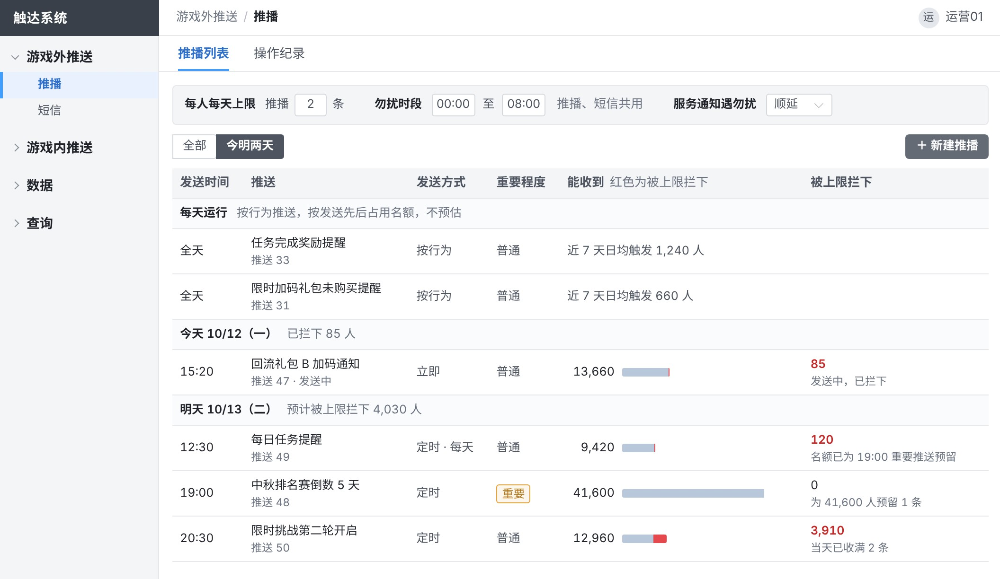
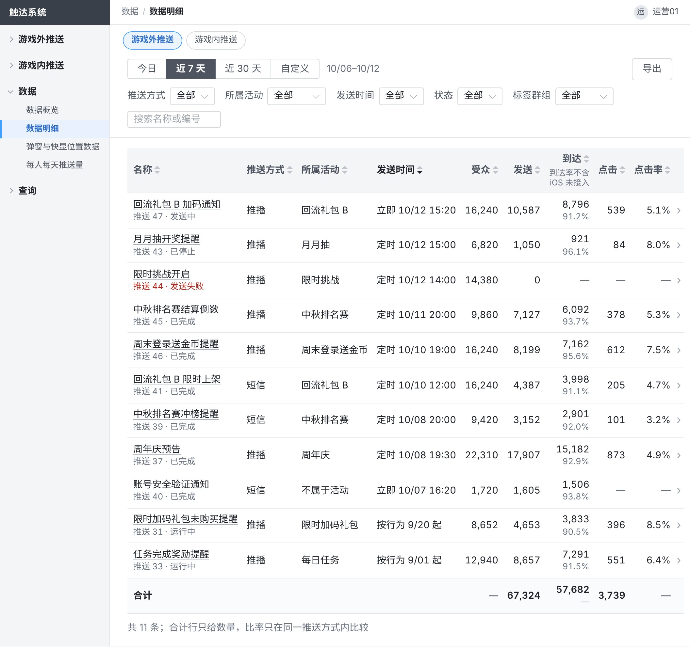

触达系统需求
后台结构

第一部分
游戏外推送第 1–3 页
第一部分 游戏外推送第 1 页 / 共 10 页
按玩家分群推送




业务规则上限与勿扰 · 今明两天 · 操作纪录 · 内容 · 发送对象 · 发送时间 · 所属活动 · 防错 · 标签群组
上限与勿扰
| 每人每天上限：推播 2 条（沿用现行运营规范）、短信 1 条，各在自己的列表顶部设，上线后可调；两种各自计数，与弹窗、快显的上限互不占用。 |
| 到上限后当天不再发、不补发，次日 00:00（台湾时间）重新计数。 |
| 勿扰时段 00:00–08:00，只对推播、短信生效，两种共用一个设置，推播、短信列表顶部显示的是同一个；现行系统推送的勿扰时段 22:00–08:00 统一为 00:00–08:00。 |
| 命中勿扰时，立即、定时推送整条顺延到 08:00，按行为推送默认放弃；服务通知默认顺延，可在列表顶部改为照发，其中账号安全通知（停权、异常登录）默认不受勿扰。 |
| 每条推送依次判断玩家能否收到、勿扰时段、每人每天上限，前一步拦下的不进下一步。 |
今明两天
| 列表的今明两天视图按时间列出当天与次日要发的推送，标出重要程度、能收到的人数和被上限拦下的人数：已开始发送的为实际人数，未开始的为预计；按行为推送只列近 7 天日均触发人数，不预估。 |
操作纪录
| 推播、短信、弹窗、快显各页沿用现有的「操作纪录」页签，默认只列本页面的记录；页面选「全部页面」时跨页面查，可导出。 |
| 按页面、日期、操作人、操作、对象名称或编号查询。 |
| 每条记录含时间、操作人、页面、对象、操作、改动内容。 |
| 改内文这类操作可展开，对照改前与改后。 |
| 系统自动发生的状态变化，如到时开始发送、发送失败、生效期间结束，也记录，操作人记为「系统」。 |
| 推播、短信、快显与弹窗规则的新建、编辑、发送、停止，列表顶部上限与勿扰的修改，以及测试发送，每次各记一条；记录只增不改不删。 |
| 活动、礼包改期后，发送时间随之变动的推播、短信和快显各记一条，操作人记为「系统」。 |
内容
| 标题与内容按繁中、越南文、英文三种语言填，可一键生成另外两种后再改；玩家收到自己游戏语言的那一种。 |
| 新建时选消息类别：营销或服务通知。营销受每人每天上限和勿扰；服务通知（补偿到账、维护、账号安全、绑定结果）不受上限、不计入当天条数。 |
| 营销的立即、定时推送新建时选重要程度：普通（默认）或重要。重要的确认后，为发送对象预留当天该推送方式 1 条名额；同一天比它早发的普通推送只能用剩下的名额；重要推送之间按发送先后。 |
| 按行为推送不分重要程度、不预留名额，与普通推送一样按发送先后占用。 |
| 确认前写出为多少人预留、当天更早的普通推送预计多拦下多少人；重要推送停止、改为普通或改日期时，预留随之释放或改到新日期。 |
发送对象
| 发送对象为一个或多个标签群组、全部玩家，或上传的会员编号名单；上传名单只用于立即、定时推送，如中奖、补偿名单。 |
| 选多个群组时取并集：满足任一即发送，重叠的玩家只收 1 条。 |
| 排除群组： 固定排除，不能移出：黑名单、机器人与测试账号、敏感状态账号（停权、自我限制、注销处理中） 默认排除，运营可移出：VIP 名单 运营还可再加其他群组 |
| 能收到推送的玩家： 推播：装了 App 且开启通知的玩家 短信：有有效手机号且未退订的玩家 同一设备或同一手机号只发 1 条 |
| 预计发出：群组人数扣掉排除群组得到受众，再扣掉收不到推送的玩家；立即发送时再扣掉此刻已收满每人每天上限的人，定时发送不预估这一项，到发送时按当时扣除；确认前逐层显示。 |
发送时间
| 推播分立即、定时、按行为三种；按行为的设置见第 2 页。 |
| 定时推送按开始发送时群组里的玩家发出。 |
| 定时可设每天或每周几重复，填重复至哪天（不超过 90 天）；每次到点按当时群组里的玩家发出。 |
所属活动
| 推播、短信、快显新建时选所属活动，或选「不属于活动」；所属活动和点击跳转的页面从后台现有的活动、礼包里选。 |
| 弹窗规则里的每个弹窗内容各对应一个活动或礼包，同样从现有的活动、礼包里选（见第 4 页）。 |
防错
| 可先发给测试账号；发给全部玩家时，确认前多一步核对总人数。 |
| 发送中可停止，已发出的不撤回。 |
标签群组
| 现有：在会员标签设定里用会员标签按且、或、排除组合出一组玩家，随标签数据定时更新。 |
| 新增功能：建群组时可在群组之间取交集，如「回流且潜在付费」；每个条件显示人数。 |
| 新建 7 个标签： · 潜在付费：注册第 7–60 天、从未储值、近 14 天押注合计不低于 20,000（游戏内货币） · 潜在流失两档：注册满 28 天、近 7 天内有登录、第 15–28 天登录不少于 4 天，且近 14 天登录 2–3 天；另一档其余相同、近 14 天登录 1 天；两档的群组都排除新增、回流玩家 · 近 7 天发生过破产 · 注册后未再登录两档：注册次日未再登录；注册第 3 天未再登录 · 随机分桶号：按会员编号和所属实验算出的 0–99，每位玩家在同一实验里固定一个号，实验改名不重新分组；用来分实验组与对照组（见第 4 页） |
| 在用的标签群组不能停用或删除；修改在用的群组时，保存前列出受影响的推播、短信、快显和弹窗规则。 |
第一部分 游戏外推送第 2 页 / 共 10 页
按玩家行为自动推送

业务规则现状与改动 · 触发与对象 · 提醒间隔 · 勿扰与在线
现状与改动
| 现有：礼包后台「推荐礼包设定」设限时加码礼包未购买推播的时间（还剩几小时）与标题，由礼包后台直接发推播，不受每人每天上限。 |
| 改为：推播、短信、快显新建时可选按行为发送；推荐礼包设定的推播改由一条按行为推播发：礼包结束前 N 小时、只发给尚未购买该礼包的玩家，受每人每天上限。 |
触发与对象
| 触发行为分两类： · 玩家行为，首批 5 种：玩家升级、完成任务、通行证升级、中奖（只用于快显）、破产后未回到游戏（不用于快显）；新的玩家行为由 RD 登记后可选 · 活动事件：活动、礼包开始或结束前后 N 小时；活动和所有玩家同时上架的礼包按统一的起止时间，所有玩家同一时刻发出；每位玩家各自出现的礼包（如限时加码礼包）按该玩家自己的礼包时间，发给出现该礼包的玩家 |
| 活动、礼包开始或结束前后的提醒，活动、礼包改期后自动跟随；按统一起止时间的，发送对象选全部玩家或标签群组。 |
| 触发条件按触发行为填，如选哪个活动或礼包、开始或结束前后几小时；选礼包时可设只发给尚未购买该礼包的玩家。 |
| 生效期间从开始日期起运行；不填结束日期则长期运行。 |
| 玩家行为的发送对象为触发的玩家，可再限定标签群组、加排除群组，规则同第 1 页；确认前显示近 7 天该行为每天发生的次数与人数。 |
提醒间隔
| 同一玩家两次提醒之间至少隔几小时，默认 24 小时。 |
| 被每人每天上限拦下、勿扰放弃、因玩家在线不发的，间隔不起算。 |
勿扰与在线
| 触发时正值勿扰时段的，放弃发送（默认）或顺延到勿扰结束，每条推送单独选。 |
| 顺延的提醒到勿扰结束时，重新判断触发条件和每人每天上限。按行为的提醒到勿扰结束时可能已失效，如礼包已过期。 |
| 玩家在线时照发或不发，每条推送单独选。 |
| 默认玩家升级、完成任务、通行证升级不发，活动、礼包开始或结束前后照发；破产后未回到游戏只在玩家离线时触发。 |
| 选了在线不发的，触发时在线的玩家这次收不到推播；需要在游戏里提示的，运营另配同一触发行为的快显（第 5 页）。 |
第一部分 游戏外推送第 3 页 / 共 10 页
短信


业务规则现状与改动 · 上限与封顶 · 内容与计费 · 发送
现状与改动
| 现有：营销侧按名单发短信，不受每人每天上限与勿扰，数据在数据平台。 |
| 改为：在触达系统按标签群组或名单发，受每人每天上限与勿扰；营销侧的周期排程停掉，在触达系统用定时的重复重建。 |
上限与封顶
| 短信每人每天上限 1 条，在短信列表顶部设；勿扰时段与推播共用一个设置，今明两天视图同推播（第 1 页）。 |
| 短信不设重要程度，按发送先后占用名额。 |
| 按行为发送须设每天最多发几则（默认 2,000 则），列表里显示当天已用与封顶；到顶后当天其余触发不发，次日 00:00 重新计数。 |
内容与计费
| 内文先选消息类别（营销或服务通知），繁中、越南文、英文三种语言的填法同第 1 页；每种语言分别显示字数与则数，超出一则时提示；营销短信自动加品牌前缀【會員通知】和退订说明。 |
| 链接可选外部网页或游戏内页面；外部网页自动换成短链，统计点击次数。 |
| 按则计费，三种语言计法相同：70 字以内计 1 则；超过 70 字时每 67 字计 1 则。 |
| 品牌前缀和退订说明计入字数。 |
发送
| 发送对象、排除群组的选法同推播（第 1 页）；能收到短信的是有有效手机号且未退订的玩家。 |
| 发送时间：立即、定时或按行为，填法同推播。 |
| 确认前显示群组人数、受众、能收到短信的人数、预计发出人数（上限拦下的算法同推播，见第 1 页）、每条计几则和共计几则（玩家收到哪种语言按哪种语言计）。 |
第二部分
游戏内推送第 4–5 页
第二部分 游戏内推送第 4 页 / 共 10 页
按玩家分群配置弹窗


业务规则现状与改动 · 每人每天上限 · 规则内容 · 派发对象与预计人数 · 权重 · 重叠与跳过 · 保存并上架 · 实验
现状与改动
| 现有：活动管理里大厅自动弹窗管理的「大厅弹窗顺序设定」，列表按弹窗名称、弹窗类型、弹窗位置、对象、状态筛选；编辑弹窗「弹窗排序配置」设弹窗类型、弹窗名称（三种语言）、弹窗位置、派发对象（全部玩家、VIP 卡别、指定名单、群组标签，即其他页说的标签群组）、权重、弹出数量、标签状态，以及弹窗顺序（弹窗内容、弹窗时机、弹窗形式、每日弹窗次数、冷却时间）。 |
| 改为：现有字段与叫法照旧；新加排除群组与固定排除、预计人数与重叠、两种弹窗时机（非首次登入、第 N 次登入）、按周期的弹窗次数、弹出后终止后续弹窗、不可关闭、跳过当天快显提示过的同项、每人每天上限，截图里新加的字段标「新」。 |
每人每天上限
| 在大厅弹窗顺序设定顶部设，只管大厅自动弹窗与快显：大厅自动弹窗每人每天 8 个、快显 3 次，两种各自计数；上线后可调。游戏破产弹窗不计入，由各弹窗内容的弹窗次数与冷却时间控制。 |
| 到上限后当天不再弹出或显示，次日 00:00（台湾时间）重新计数。 |
| 每次弹窗依次判断投放条件（规则的派发对象、弹窗时机、生效期间）、弹窗内容的弹窗次数与冷却时间、每人每天上限；超出上限的弹窗内容被截掉，不消耗次数与冷却，之后不补弹。 |
| 列表里的标签状态沿用现有字段，指这条规则启用或停用，对象为全部玩家的写「-」。 |
| 页内子导航沿用现有「弹窗顺序设定｜玩家弹窗顺序查询」，点后者打开玩家查询页的弹窗部分（自动弹窗顺序、游戏破产弹窗顺序两张表，第 10 页）。 |
规则内容
| 每条规则选弹窗类型（活动类、储值类）和弹窗位置：大厅自动弹窗（玩家进入或返回大厅时弹出）、游戏破产弹窗（玩家破产、发财金领取结束后弹出；规则里可限定在哪些游戏破产时才弹，默认全部游戏）；并设弹出数量，即每次最多弹出几个。 |
| 弹窗名称按繁中、越南文、英文三种语言填，可一键生成另外两种；列表、数据和操作纪录里都写弹窗名称加弹窗活动 ID。 |
| 弹窗顺序是本规则里按先后弹出的清单（列表里的「弹窗排序」列），每一行是一个弹窗内容，从后台现有的活动、礼包里选，先后可调整。 |
| 每个弹窗内容设弹窗时机、弹窗形式（活动本身或活动广告页）、弹窗次数、冷却时间（秒），以及是否「弹出后终止后续弹窗」、是否不可关闭（玩家须点按钮）。 |
| 大厅自动弹窗的弹窗时机共六种，可多选，所选时机任一发生即可弹出（弹窗次数未用完时）：活动开启（活动上架后玩家第一次进入大厅，每期一次）、首次登入（沿用现有）、非首次登入（首次登入以外的每次登入）、第 N 次登入（按账号累计登入次数）、进入大厅、返回大厅。游戏破产弹窗不选弹窗时机。 |
| 弹窗次数由现有的每日几次扩展为按周期设：每日、每周、每 N 天、生效期间内、终身或每回流周期（玩家每回流一次算一个周期），再填周期内弹几次。 |
派发对象与预计人数
| 派发对象四选一：全部玩家、VIP 卡别、指定名单（上传会员编号，同推播）、群组标签；可再选排除群组。VIP 卡别按玩家当前卡别选，与下一条固定排除的 VIP 名单不是同一批人。 |
| VIP 名单、黑名单、机器人与测试账号、敏感状态账号对所有弹窗固定排除，不能移出；推播、短信、快显的排除群组见第 1 页。 |
| 弹窗预计人数为会先弹本规则的人数：派发对象减去排除群组，再减去与权重更大的规则重叠的人；固定排除的玩家弹出时才扣，不从预计人数里减，旁边注明其中固定排除约多少人。 |
权重
| 同一位置每次弹窗，活动类、储值类各取一条规则。 |
| 取哪一条看权重：此刻对这位玩家有可弹弹窗内容的规则里，权重最大的一条。它的弹窗内容用完或在冷却中时，由权重次大的一条接替，所以一位玩家一天里可能看到同类两条规则的弹窗内容。 |
重叠与跳过
| 与同位置、同类型其他上架规则重叠时，显示重叠的人数和这些人先弹哪一条。 |
| 规则之间用排除群组避免重叠，如回流规则排除新增玩家；仍重叠的玩家先弹权重大的一条。 |
| 规则可勾选跳过当天已用快显（游戏内横幅）提示过的同一活动或礼包，默认不勾；勾了时，玩家当天已看过同项快显的弹窗内容本次不弹，取下一项。 |
| 勾了「弹出后终止后续弹窗」的弹窗内容弹出后，同位置后面的弹窗内容本次不弹；现有规则里的发财金、揪友同乐邀请默认勾选。 |
保存并上架
| 保存并上架前弹出确认，列出改了什么、预计人数、与其他上架规则的重叠和受影响的其他规则，确认后才生效。 |
实验
| 实验组与对照组用标签群组分：按随机分桶号（每位玩家在同一实验里固定的 0–99 号，见第 1 页）建两个群组，如 0–49、50–99，两组各配一条规则，分别看两条规则的数据（第 7 页）对比。 |
第二部分 游戏内推送第 5 页 / 共 10 页
快显


业务规则现状与改动 · 每人每天上限 · 内容与对象 · 发送时间
现状与改动
| 现有：快显的内容与触发写死在客户端，如通行证升级提示（局内右上角横幅）、大厅中奖播报，发给当时在线的全部玩家，改内容要发版，没有数据。 |
| 改为：在触达系统新建快显，设文字、位置、对象与发送时间；通行证升级提示改由一条按行为快显发；大厅中奖播报照旧由原处显示。 |
每人每天上限
| 快显每人每天 3 次，和大厅自动弹窗一起在大厅弹窗顺序设定顶部设置（第 4 页），显示 1 次计 1 次；不受勿扰时段限制。 |
| 快显不分重要程度，按显示先后占用名额；快显列表显示每条快显今天被上限拦下的人数。 |
内容与对象
| 快显是游戏界面里的即时横幅；可设横幅文字、显示位置（大厅顶部横幅、局内右上角横幅）、停留秒数、点击跳转的页面。横幅文字按繁中、越南文、英文三种语言填，填法同第 1 页。 |
| 显示位置需要新版本 App 时，可设旧版本回退到大厅顶部横幅，如通行证升级提示。 |
| 发送对象和排除群组的选法同推播（第 1 页）。 |
| 只显示给在线玩家。定时快显可设显示时段（到点起 0–240 分钟，默认 30 分钟）：时段内上线的发送对象上线时显示一次，时段结束后上线的不显示；设 0 即只显示给到点在线的玩家。 |
发送时间
| 立即、定时或按行为；定时可设每天或每周几重复，同推播；按行为的触发行为与提醒间隔同第 2 页。 |
第三部分
数据第 6–9 页
第三部分 数据第 6 页 / 共 10 页
数据概览

业务规则游戏外推送 · 游戏内推送 · 对比与走势 · 指标算法
游戏外推送
| 推播、短信合计的发送、到达、点击、到达人数和人均每天收到几条；到达率、点击率按推送方式分开列，不给合计（两种推送方式到达、点击的条件不同）；每条推送的数据见第 7 页。 |
游戏内推送
| 弹窗、快显的曝光、曝光人数、点击、点击率和人均每天弹窗曝光几个；每条弹窗规则的数据见第 7 页，各位置的数据见第 8 页。 |
对比与走势
| 每个数字显示与前一个同样长度的周期相比的增减，并附所选期间的每日走势。 |
指标算法
| 游戏外推送从发送算起，点击率＝点击÷发送；游戏内推送从曝光算起，点击率＝点击÷曝光；两层分开统计，不相加。 |
| 到达率＝到达÷可确认到达的发送；iOS 旧版本 App 收不到到达回执，这部分单列为「iOS 未接入」，不进分母。 |
| 人均每天收到几条＝当天收到推播或短信的玩家平均每人收到几条；人均每天弹窗曝光几个＝当天看到弹窗的玩家平均每人看到几个；都取所选期间每天的平均。 |
第三部分 数据第 7 页 / 共 10 页
数据明细



业务规则数据列表 · 筛选与导出 · 单条推送 · 单条弹窗规则
数据列表
| 一张表每行一条推播、短信、快显或弹窗规则及其数据；页内切换游戏外推送、游戏内推送两层。 |
| 游戏外推送一层的数据是受众、发送、到达与到达率、点击、点击率；游戏内推送一层是曝光人数、曝光、点击、点击率。 |
| 点击率的分母各按本层；到达率的分母不含 iOS 未接入的发送，所以不等于到达÷发送（算法见第 6 页）；合计行只给数量，到达率、点击率写「—」。 |
| 按行为推送和弹窗规则持续运行，列表里的数据按所选时间范围累计。 |
筛选与导出
| 按时间范围、推送方式、所属活动、发送时间（立即、定时、按行为）、状态、标签群组、名称或编号筛选；游戏内推送一层按活动或礼包筛选时，列出含对应弹窗内容的弹窗规则。 |
| 可按任一列排序、导出；点一行进入这条推送或弹窗规则的数据。 |
单条推送
| 从受众、发送、到达到点击，每一步少了多少；另列发送后 24 小时内登录的人数。 |
| 未发出的原因：发送前拦下的按原因分项、从多到少排列，如没装 App、通知关闭、勿扰放弃、每人每天上限拦下；服务商未受理的另列；可导出名单。 |
| 短信用「发送后 24 小时内登录」看效果；推播的登录数据只作参考。玩家收到短信后多直接打开游戏，不点链接。 |
单条弹窗规则
| 漏斗：一条规则从进入弹窗位置、符合条件、曝光到点击，每一步少了多少。 |
| 趋势图按日显示这条规则的曝光与点击率，图上标出这条规则每一次保存的改动和 App 发版，画法同位置数据（第 8 页）。 |
| 可拆分：按弹窗内容、按人群、按平台。 |
第三部分 数据第 8 页 / 共 10 页
弹窗与快显位置数据

业务规则位置统计 · 按位次 · 改动与发版
位置统计
| 大厅自动弹窗、游戏破产弹窗、快显各自统计曝光人数、曝光、点击、点击率，与前一个同样长度的周期对比。 |
| 每个位置一张趋势图，按日显示曝光与点击率；图上标出这个位置上所有规则的改动和 App 发版。 |
| 这个位置上各条规则的数据不在本页另列，页头链接到数据明细的游戏内推送一层（第 7 页）；曝光人数按玩家去重。 |
按位次
| 统计玩家这次进入该位置时第几个看到的弹窗，各位次的曝光与点击率；位次按这次排定的弹出顺序算，跨规则计，与弹窗内容在规则里的先后无关。 |
改动与发版
| 趋势图上相邻两次改动或发版之间，画出这段时间的平均点击率。 |
| 趋势图上的规则改动取自弹窗页的操作纪录，图下按时间逐条列出每次改动的日期、改了什么、谁改的。 |
| 规则改动或 App 发版之前的数据照样保留，与之后的数据画在同一张趋势图上。 |
第三部分 数据第 9 页 / 共 10 页
每人每天推送量

业务规则游戏外推送 · 游戏内推送
游戏外推送
| 收到推播的玩家每天计入上限 1 条、2 条（到上限）各占多少；服务通知不计入。短信每人每天上限 1 条，不画分布。 |
| 每天碰到上限的人数（当天已收满上限条数的玩家）与上限拦下人次（收满后又被拦下的推送）的走势，推播、短信分开看；图上标出推播、短信列表顶部上限与勿扰设置的改动（第 1 页）。 |
游戏内推送
| 玩家每天看到几个弹窗、几次快显的分布，图上标出每人每天上限的位置；每天碰到上限的人数走势。 |
第四部分
查询第 10 页
第四部分 查询第 10 页 / 共 10 页
玩家查询

业务规则现状与改动 · 查询与结果 · 账号权限
现状与改动
| 现有：弹窗后台的「玩家弹窗顺序查询」，按会员编号、昵称或手机号码查一位玩家，显示玩家信息（标签名称、标签状态）与自动弹窗顺序、游戏破产弹窗顺序两张表。 |
| 改为：扩展为推播、短信、弹窗、快显四种推送的查询，两张弹窗顺序表与字段名照旧。 |
查询与结果
| 按会员编号、会员昵称或手机号码查一位玩家；查到后显示玩家资料（标签名称、标签状态、最后登录、平台与版本、在线状态）。 |
| 自动弹窗顺序、游戏破产弹窗顺序两张表列不变：顺序、类型、礼包名称、弹窗活动 ID、弹窗名称。 |
| 推播、短信、弹窗、快显各自能否收到，不能时写原因（如通知关闭、没有手机号）；今天已收几条、上限多少、最近一次收到的时间。 |
| 近 30 天推播、短信、快显的每一条和每次弹窗的结果与原因，如被每人每天上限拦下时写明名额被哪几条占用；弹窗可展开看每个弹窗内容弹没弹。 |
账号权限
| 沿用后台现有的账号权限，分运营、只读两种：运营可用全部页面，可新建、编辑与发送；只读账号可查看全部页面，不能改动；客服用只读账号。 |